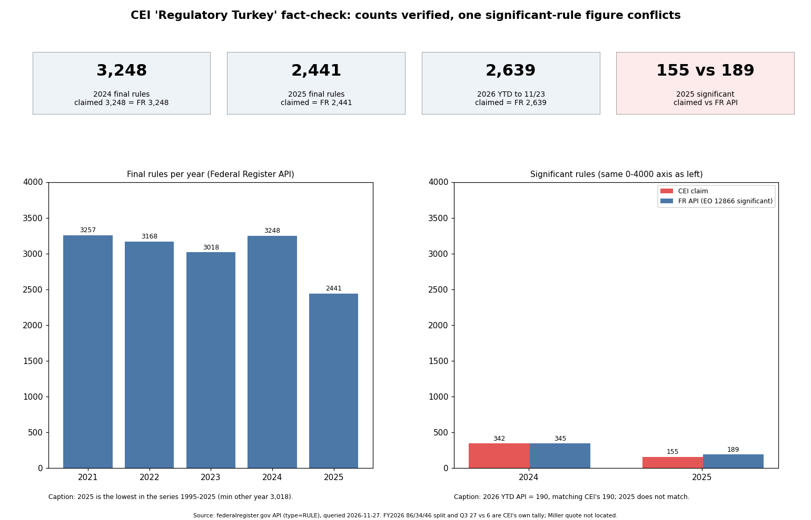

Every headline Federal Register count in Crews' 11/23/2026 piece reproduces exactly: 3,248 final rules in 2024, 2,441 in 2025, 2,639 in 2026 through 11/23, the 2,946 projection and 75,742 pages. The one number I could not reproduce is 155 significant rules in 2025; the Federal Register API's EO 12866 significance flag gives 189 (2024: 345 vs claimed 342). That same flag gives 190 for 2026 YTD, matching CEI's 190, so on a like basis significant rules did not fall in 2025-26 as the 155-to-190 comparison implies.
| Claim | Verdict | Evidence |
|---|---|---|
| Biden 2024 FR: 3,248 final rules | Verified | FR API: 3,248 |
| 342 significant in 2024 | Approximately | FR API (EO 12866 flag): 345 |
| Trump 2025: 2,441 final rules, lowest ever | Verified (count); 'all time' verified only 1995-2025 | FR API 2,441; next lowest 2023 at 3,018; 1995-2025 min |
| 155 significant in 2025 | Conflicts | FR API: 189. Same measure gives 190 for 2026 YTD, which matches CEI's 190, so 155 is not on a like basis |
| 2026 to 11/23: 2,639 rules, 190 significant | Verified | FR API: 2,639 and 190 |
| On track for ~2,946 | Verified arithmetic | 2,639/327*365 = 2,946 |
| FR at 75,742 pages | Verified | Max end_page of 11/23/2026 issue: 75,742 |
| FY (to 9/30): 166 significant = 86 dereg, 34 reg, 46 technical; Q3 27 vs 6 | Not checkable here | CEI's own subjective tally; no official one-in-ten-out count (CEI's Oct 5 post says so) |
| Many rules are repeals, withdrawals, delays | Plausible, not independently tallied | Consistent with CEI tally; no official classification |
| Stephen Miller: one-in-ten-out more successful than Reagan-era deregulation | Not checkable here | No transcript found by search |
| Tariffs, subsidies, equity stakes steer without appearing in rule counts | Opinion/interpretation | True that these are not FR final-rule counts |
Answer: verified. Key values: calendar years 2024-2026 YTD, type=RULE, n as above. Sources: federalregister.gov API. Confidence: high, direct query.
Answer: 2024 near match, 2025 conflict. Key values: API 345/189/190 vs CEI 342/155/190. Confidence: medium, CEI may use a different definition (its Ten Thousand Commandments tally).
Answer: not checkable here. Confidence: high that no official tally exists; the CEI Oct 5 post says its categories are subjective.